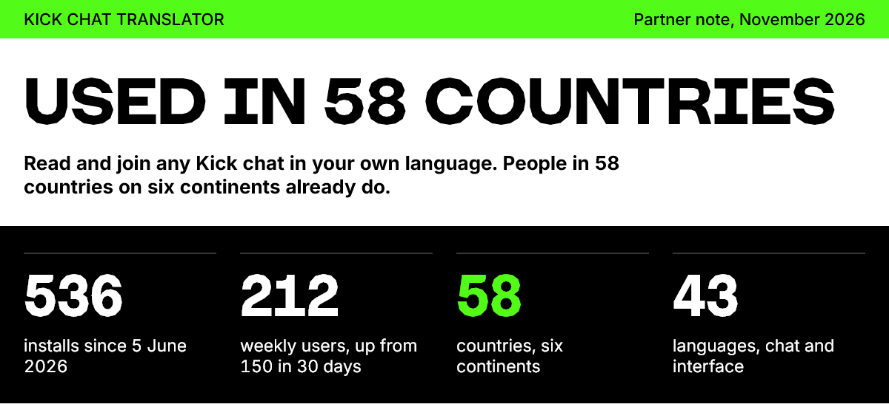
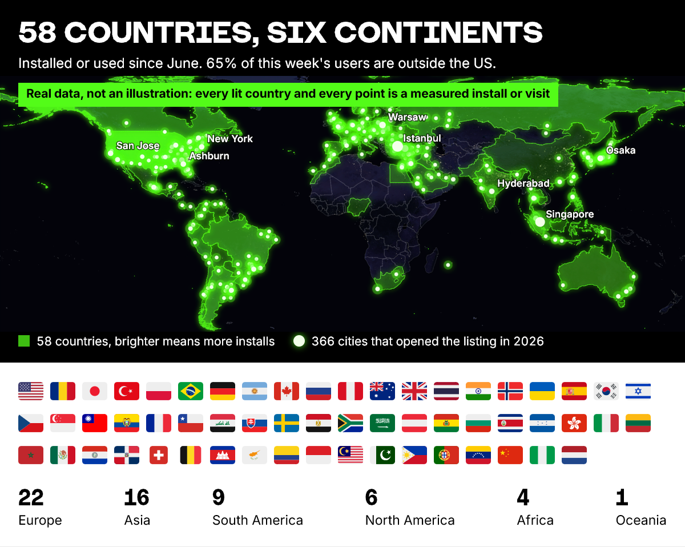
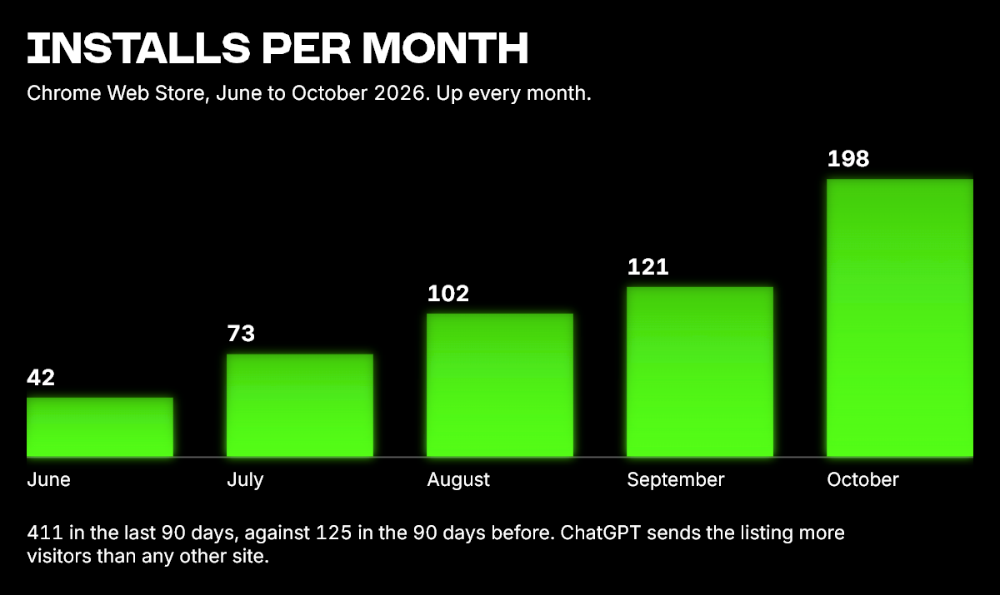
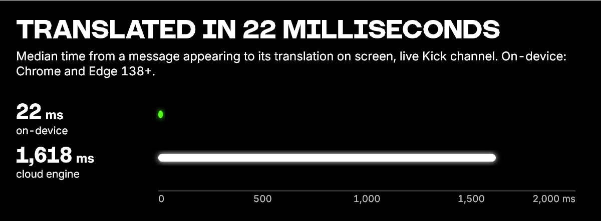

To: kickpartners@kick.com
Cc: business@kick.com
Subject: Developer partnership proposal: Kick Chat Translator (browser extension)
Attach: Kick-Chat-Translator-partner-kit.pdf
Hello Kick Partners team,
I build Kick Chat Translator, a free browser extension that lets anyone read and join any Kick chat in their own language. Every message is translated as it arrives, and a viewer's reply is shown in the channel's language before it is sent.

Since June it has been installed or used in 58 countries on six continents, from Japan, Turkey and Poland to Brazil, Peru and Morocco. That is exactly what it was built for, and it shows how international Kick chat already is.

It has grown every month since it reached the Chrome Web Store, with 212 weekly users today. Those users do more than read: each one puts about 7 translated replies a day in the chat box, written in the channel's language.


The attached 6-page note has every country, the product, usage and latency, and the source of each number. I have three questions:
1. Would Kick promote it? On its social accounts, the KICK Dev site or a Help Center article for viewers who don't speak a channel's language.
2. Can it join the KICK Dev program for apps? It runs on kick.com in the viewer's browser and doesn't use the OAuth API today. If it needs to be a registered KICK App or use the public API, I'll make that change.
3. Is there a current or upcoming developer bounty it fits?
If the name or icon has to follow Kick's brand guidelines, tell me and I'll update both store listings.
Chrome Web Store: https://chromewebstore.google.com/detail/kick-chat-translator/nkkjmbkmacbdkboijmnhjnblcaiclhni
Firefox Add-ons: https://addons.mozilla.org/firefox/addon/kick-chat-translator/
Demo: https://www.youtube.com/watch?v=NoGJeUrwy9o
Source: https://github.com/kilworks/kick-chat-translator
[Your name]
Developer, Kick Chat Translator
Independent project, not affiliated with Kick.